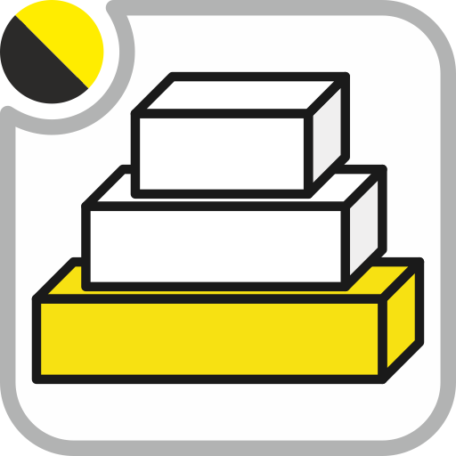

Shared foundation for every Patanegra Soft Suite module. Install this first. The other modules will not load without it.
Nowhere. There is no page under Settings, no Technical menu and no module Settings. Base has nothing to paste and no company-level switch.
Install it first and leave it. If something looks like configuration, it belongs in the module that owns the feature (AI Engine, Geo, …).
The shared foundation of every pns_* module. Install it
first. The others list pns_base in depends.
This module never depends on them.
No customers, invoices or AI skills. Those stay in each product module.
If another database needs the suite, it installs the same Base.
Customer packs live in {client}_custom_*, never here.
1. Old-style screens on Odoo 17, 18 and 19.
The owl1 / owl2 folders are for JavaScript
(two different web toolkits). Screen XML is written the same in both,
in the old style (attrs, <tree>).
Writing the new style in owl2 would break Odoo 15 and 16. Copying every
screen would mean changing each form twice. Base translates the XML
when Odoo 17+ loads it. You do not import anything; installing Base is
enough. On 14–16 it leaves the views alone.
2. One name for jobs Odoo renamed. Same action, different function name or arguments per version (HTTP routes, user groups, cache). Call Base; Base talks to Odoo.
3. A small library.
Toasts, the “operation result” screen, file paths inside
the addon, and the Apps sheet that embeds each module’s
index.html. Things every module would otherwise copy.
pns_* modules.pns_base before any other Patanegra module on this database.pns_* module that depends on it.attrs/<tree> syntax. Do not hand-write Odoo 17+ view syntax in source.odoo.addons.pns_base.utils.ui_feedback instead of inventing a new helper.14.015.016.017.018.019.020.0
Each one tested, with its flat branch. Odoo 13 and older are not supported: Patanegra Soft Suite starts where its AI can run (OWL for the chat, Python 3.7 for the engine).
On GitHub: patanegra-soft/pns_base.
main is one tree for every series: shared code in common/ and one stack per OWL generation (owl1 for Odoo 14 and 15, owl2 for 16 to 19, owl3 for 20). Clone it to maintain several Odoo versions from one place../install_flat.sh 19.0 <dir> builds the flat module of a series. The branches 14.0 to 20.0 are that result, ready for the addons path.unit_tests/, pytest) live in main. The Odoo test in tests/ opens the web client in Chrome and fails on a JavaScript error.Bugs: an issue, with the bug form. Ideas and questions: Discussions.
| Module | Where | Role |
|---|---|---|
pns_base |
O14 and O19 | This layer: old-style screens on 17+, one name for renamed Odoo APIs, small shared library |
Other pns_* |
Same majors as each module | Must depend on Base; never the other way around |
UI source in English. Layout: common/ plus OWL1 (Odoo 14) and OWL2 (Odoo 15 and later) stacks.
PATANEGRA Soft™ — Apache License 2.0 (OSI approved). See LICENSE and NOTICE. PATANEGRA Soft, PATANEGRA Soft Suite and Chatboo are trademarks of PATANEGRA Soft SL. The Apache license does not grant trademark rights.